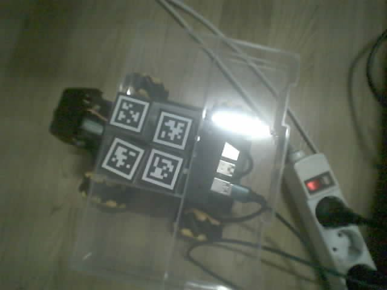
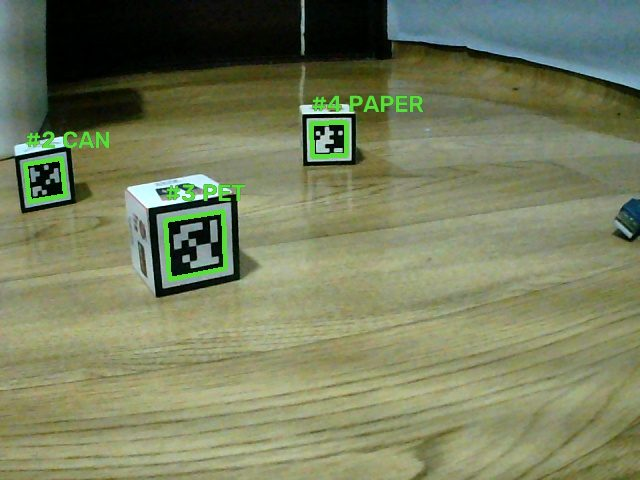

트레이에 올린 쓰레기를 AI 가 보고, 로봇이 맞는 통까지 찾아가 쏟고 돌아옵니다.
AI2 8조
이정민 (팀장·로봇) · 정유정 (AI) · 서민형 (웹·앱)
캔인지, 페트인지, 종이인지 매번 따지기 귀찮으면 한 통에 섞여 들어가고 재활용이 어려워집니다.
캔 페트 종이 빈 트레이
이번에 나누는 종류는 세 가지와 "아무것도 없음". AI 담당이 정한 이름(can / pet / paper / empty)을 통 이름으로도 그대로 씁니다.
사람이 하는 일은 물건을 트레이에 올리는 것뿐입니다.
1
출발점에서 로봇 위 트레이에 물건을 하나 올립니다.
2
로봇에 달린 AI 카메라(XIAO ESP32S3)가 캔·페트·종이를 구분해 라즈베리파이에 알립니다.
3
통마다 붙인 마커를 카메라로 찾아 다가갑니다. 안 보이면 카메라를 돌려 둘러봅니다.
4
통 쪽으로 옆면을 대고 트레이를 기울여 쏟은 뒤, 출발점 마커로 돌아옵니다.
진행 상황과 통별 개수는 웹 대시보드에서 실시간으로 봅니다.
분류에서 물체 검출로 바꿔 19% 에서 50% 대까지 올렸습니다. 목표 90% 와는 거리가 있습니다.
학습에 쓰지 않은 사진 약 100장으로 잰 값. 점선은 목표 90%.


카메라 위아래 서보가 고장 나서, 그 단자에 아두이노 키트 서보를 꽂고 두부 통 크기의 트레이를 달았습니다.
1
통 마커를 정면으로 보고 멈춥니다.
2
왼쪽으로 약 90° 돌아 트레이가 있는 오른쪽 면을 통에 댑니다. 옆 카메라에 마커가 보이면 옆걸음으로 붙습니다.
3
노란 불과 짧은 삐 소리 뒤, 트레이를 천천히 90° 기울였다가 수평으로.
4
되돌아 회전한 뒤 출발점 마커를 찾아 돌아갑니다.
서보 힘(SG90, 약 1.6kg·cm)이 약해 빈 캔·작은 페트·종이처럼 가벼운 것만 됩니다.
| 장치 | 언제 멈추나 |
|---|---|
| 리모컨 전원 버튼 | 누르는 즉시. Wi-Fi 가 끊겨도 됩니다 |
| 자동 정지 | 모든 이동 명령은 정해진 시간(최대 3초) 뒤 스스로 멈춤 |
| 초음파 | 앞으로 가다 15cm 안에 물체가 있으면 |
| 속도 상한 | 어떤 명령이 와도 150/255 를 넘지 않음 |
| 수동 조작 | 화면에서 정지·이동을 누르면 진행 중인 임무를 바로 취소 |
설치 없이 브라우저로 여는 대시보드. 휴대폰에서는 아래 탭, 노트북에서는 왼쪽 메뉴로 바뀝니다.
USB 카메라가 사진을 쌓아 두어, 돌린 직후에도 돌리기 전 화면으로 판단. 최신 한 장만 쓰도록 바꿈.
카메라가 정면 고정이라 낮은 마커가 화면 아래로 빠짐. 크게 보이던 마커가 사라지면 도착으로 판단.
카메라 라이브러리가 USB 카메라를 다른 방식으로 열어 마커를 못 읽음. USB 는 OpenCV 로 열도록 분리.
회전하다 충전선·AI 보드 선을 밟아 방향이 틀어짐. 리모컨으로 멈추고, 선은 로봇 위에 고정하기로.
작은 블록 대신 뒤쪽 벽을 재서 너무 일찍 도착. 블록 시험에서는 초음파 도착 판단을 끔.
카메라를 바꿔 끼워도 같은 오류 → 보드와 카메라를 서로 바꿔 시험해 보드 고장을 확인하고 새로 받음.
팀장 · 로봇
AI
웹 · 앱
각자 이름 브랜치에서 작업하고 Pull Request 로 합쳤습니다. 10/28 ~ 11/1 사이 PR 16개.
영상은 11/1 통합 때 찍어서 넣습니다.slides/video/demo.mp4 로 저장하면 여기서 바로 재생됩니다.
| 한계 | 이유 | 다음에 할 일 |
|---|---|---|
| AI 정확도 50% 대 | 같은 사진이 많고 장면을 외움 | 시연 물건 위주로 실제 트레이에서 다시 찍기 |
| 판정 펌웨어 미완 | 쓸 만한 모델이 나온 뒤 만들기로 함 | 보드 안 판정 → USB 로 로봇에 전달 |
| 여러 개를 한 번에 올리면 | 로봇은 트레이를 통째로 쏟음 | 확신도 1등 종류로 보낼지 팀 결정 (11/1) |
| 카메라 위아래 고정 | 서보 고장, 그 자리를 쏟기에 씀 | 마커를 세워서, 카메라 높이에 붙임 |
| 90° 회전은 시간으로 | 바닥이 바뀌면 각도가 달라짐 | 발표장 바닥에서 다시 재기 |
| 가벼운 것만 쏟음 | 작은 서보(SG90) | 더 센 서보, 짧은 트레이 |
코드, 문서, 시험 기록은 모두 GitHub 저장소에 있습니다.
github.com/Jeongmin-lee123/-ai2-8-
AI2 8조
이정민 · 정유정 · 서민형